Chapter 3 Time series data analysis, regression
3.1 introduction
시계열적 자료를 분석하고 나타나는 현상과 특정 요인과 관련성을 탐색해보는 시간입니다.
예를 들어 미세먼지가 높은 날 심혈관 질환이 발생하는가?에 대한 질문에 답하기 위해서 생가할 것이 몇가지 있습니다.
미세먼지가 높은 날이란? 심혈관 질환 사망이 높은 날이란? 이 두가지 요소를 검토하게 됩니다.
그런데 심혈관 질환의 사망은 요일마다 다르고, 계절에 따라 변동하며, 장기 적으로는 점차 증가 또는 감소를 합니다. 그런데 미세먼지도 점차 증가하고 있으니, 단순 상관관계를 보면 미세먼지도 증가 심혈관 사망도 증가하면 양의 관련성을 보이게 됩니다.
마찬가지로 GDP와 자살의 관계를 보면 어떨까요? 우리나라의 자살률은 증가하고 있습니다. 그런데 GDP도 증가하고 있습니다. 그러니 GDP의 증가와 자살의 증가는 양의 상관관계가 있다고 나옵니다. 맞나요?
네 심혈관 사망, 자살의 증가의 계절적 요소, 장기간 추세(trend)가 아니라 변동이 미세먼지나 GDP의 변동과 어떠한 관계가 있는지가 우리의 궁금증일 것 입니다. 이러한 궁금증을 R을 이용해서 풀어보도록 하겠습니다.
몇몇은 영어 책을 요약한 것인데, 아직 한글로 옮기지 못해 영어와 한글이 혼용되어 있으니 양해 바랍니다.
동영상은 아래와 같습니다.
3.2 A case study in Air Pollution and Health
the original book is https://www.springer.com/gp/book/9780387781662 이 책에서 중요한 부분을 요약하고, 몇몇을 추가하여 진행하겠습니다. 원본을 읽어 보시는 것을 추천해 드립니다.
3.2.1 Starting Up
This book used NMMAPSlite packages, but that packages and data are not easy to use. So, Gasparrini’s packages dlnm and its’ data used in this summary tutor (https://github.com/gasparrini/dlnm/tree/master/data)
Load library
rm(list=ls())
pkgs = c("tidyverse", "dlnm", "tidyverse","ggplot2","plotly","readxl","lubridate",
"DBI", "forecast", "gsheet", "Hmisc", "mgcv")
for (pkg in pkgs) {
if (pkg %in% rownames(installed.packages()) == FALSE)
{eval( bquote(install.packages(.(pkg))) )}
else
{eval(bquote(library(.(pkg))))}
}3.2.2 Statistical Issues in Estimating the Health Effects of Spatial–Temporal Environmental Exposures
3.2.2.1 tell a story
I want to tell a story ‘relationship between day-to-day changes air pollution levels and day-to-day changes in mortality counts’. So, we need useful statistical models for estimating associations rather than for prediction.
3.2.2.2 Estimation Vs. Predictiion
One question of scientific interest might be, “Are changes in the PM10 series associated with changes in the mortality series?” This question is fundamentally about the relationship between a time-varying health outcome \(y_{t}\) and a time-varying exposure \(x_{t}\). A simple linear model might relate
\[Y_{i}=\beta_{0}+\beta_{1}\textrm{x}_{t}+\epsilon_{t} \tag{1.1}\]
| estimates | contents |
|---|---|
| \(\beta_{0}\) | the mean mortality count |
| \(\beta_{1}\) | tthe increase in mortality associated with a unit increase in PM10(\(x_{t}\)) |
| \(\epsilon_{t}\) | a stationary mean zero error process. |
For example, suppose we took the exposure series \(x_{t}\) and decomposed it into two parts, average(\(\bar{x}_{t}^{Y}\)) + deviation(\(x_{t} - \bar{x}_{t}^{Y}\))
average: \(\bar{x}_{t}^{Y}\) deviation: \(x_{t} - \bar{x}_{t}^{Y}\)
So, we can reformulate (1.1) as below
\[Y_{t}=\beta_{0}+ \beta_{1}\bar{x}_{t}^{Y}+\beta_{2}(x_{t} - \bar{x}_{t}^{Y}) +\epsilon_{t} \tag{1.2}\]
Note that model (1.2) is equivalent to model (1.1) if β1 = β2, however, model (1.2) does not require them to be equal.
In the same context, the yearly average can be decomposing seasonal average or monthly average (\(z_{t}\)) \[z_{t} = \bar{z}_{t}^{S}+(z_{t} - \bar{z}_{t}^{S}) \tag{1.3}\] So, we can use following model
\[Y_{t}=\beta_{0}+ \beta_{1}\bar{x}_{t}^{Y}+\beta_{2}\bar{z}_{t}^{S}+\beta_{3}(z_{t} - \bar{z}_{t}^{S}) +\epsilon_{t} \tag{1.2}\]
Going to step further, we can add or decompose weekly moving average (\(u_{t}\)) \[u_{t} = \bar{u}_{t}^{W}+(u_{t} - \bar{u}_{t}^{W}) \tag{1.4}\]
Let, residual variation (\(r_{t}\)) as \(r_{t} = (u_{t} - \bar{u}_{t}^{W})\). then our expanded model is now
\[Y_{t}=\beta_{0}+ \beta_{1}\bar{x}_{t}^{Y}+\beta_{2}\bar{z}_{t}^{S}+\beta_{3}\bar{u}_{t}^W +\beta_{4}r_{t} +\epsilon_{t} \tag{1.5}\]
The parameter β4 describes the association between yt and the sub-weekly fluctuations in \(x_{t}\) (adjusted for the yearly, seasonal, and weekly variation).
Question & Discussion: What’s mean of \(\beta_{4}\)
3.3 simulation study for pm10 and cvd mortality
First, let’s use simulation data to help us understand some time series data analysis.
Let’s think of x as a day, and hypothetically create a random variable y1 and pm10 (fine dust) multiplied by 4.5 for 300 days
set.seed(1)
x <- 1:300
y1 <- 5*rnorm(300, sd=.1)+15
pm <- y1*4.5
plot(x, pm, type='l')
Here, it is assumed that the long term trend gradually increases, and seasonal factor through the
sin()function were added, and multiplying it by 0.03.
y2 <- y1*5+ sin(x/2)*5+ x * 0.03
y2[y2< 0]<-0
y3<-round(y2)
plot(y3, type='l')
I tried adding delay effects and days with specific events. And I created a dataframe.
lag <-6
mean(y3)## [1] 79.58667death <- c(rep(c(80,79,81), (lag/3)), y3[1:(length(y3)-lag)])
event <- c(rep(1, 30), rep(1, 30), rep(0, 240))
eventd <- c(rep(40,30), rep(30, 30), rep(0, 240))
death2<-death+eventd+10
gg <- data.frame(x, pm, y3, death, event, death2)
head(gg)## x pm y3 death event death2
## 1 1 66.09048 76 80 1 130
## 2 2 67.91320 80 79 1 129
## 3 3 65.61984 78 81 1 131
## 4 4 71.08938 84 80 1 130
## 5 5 68.24139 79 79 1 129
## 6 6 65.65395 74 81 1 131Now let’s make plot. There is an event in the first 50 days, so cardiovascular mortality is high. Then cvd is increasing slowly with a seasonal component. Fine dust was created with random + seasonal elements.
plot(x, pm, type="l", col=grey(0.5), ylim=c(50, 140), xlim=c(0, 300))
grid()
lines(x, death2, col=grey(0.7), type="p", cex=0.5)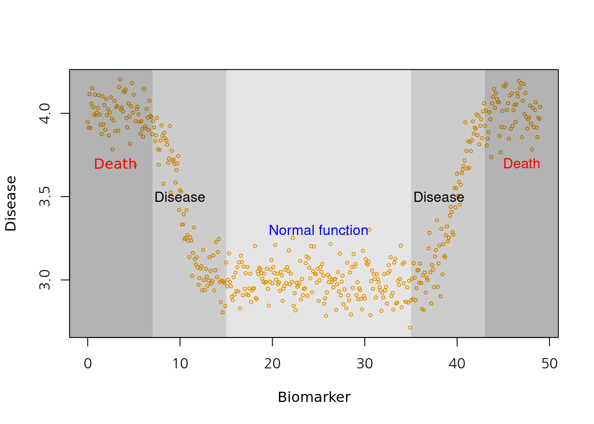
Now let’s do a simple regression analysis. What relationship are you observing? A lot of people die during the event. But there were no relationship between PM10 and CVD mortality. Oh~NO! It is clearly created CVD mortality data by simulation to relate with fine dust. Yes. ‘lag’ and ‘seasonality’ are not considered yet.
mt3 <- glm(death2 ~ x+sin(x/2)+pm+event)
summary(mt3)$coefficients## Estimate Std. Error t value Pr(>|t|)
## (Intercept) 90.10455149 6.861474711 13.1319513 2.476263e-31
## x 0.02379324 0.003500538 6.7970236 5.915161e-11
## sin(x/2) -4.41585403 0.308633540 -14.3077581 1.247252e-35
## pm -0.06144597 0.101078610 -0.6079028 5.437196e-01
## event 35.05109683 0.757861036 46.2500315 3.230388e-137let’s review the plot, how about the fitted line?
plot(x, pm, type="l", col=grey(0.5), ylim=c(50, 140), xlim=c(0, 300))
grid()
lines(x, death2, col=grey(0.7), type="p", cex=0.5)
mp3 <- c( predict(mt3))
lines(x, mp3, col=75)
now, here is simple regression model between residual of death and pm10. Is it correct?
mt2 <- glm(death2 ~ x+sin(x/2)+event)
resid_mt2 <-resid(mt2)
risk.m0<-glm(resid_mt2 ~ pm, family=gaussian)
summary(risk.m0)##
## Call:
## glm(formula = resid_mt2 ~ pm, family = gaussian)
##
## Deviance Residuals:
## Min 1Q Median 3Q Max
## -9.6006 -2.2804 -0.1559 2.3275 14.2142
##
## Coefficients:
## Estimate Std. Error t value Pr(>|t|)
## (Intercept) 4.14114 6.79037 0.61 0.542
## pm -0.06128 0.10043 -0.61 0.542
##
## (Dispersion parameter for gaussian family taken to be 14.18007)
##
## Null deviance: 4230.9 on 299 degrees of freedom
## Residual deviance: 4225.7 on 298 degrees of freedom
## AIC: 1650.9
##
## Number of Fisher Scoring iterations: 2risk.mp0 <- c( predict(risk.m0))
plot(pm, resid_mt2, type='p', cex=0.5)
lines(pm, (risk.mp0), col=25)
Here is another simple regression model between residual of death and residual of pm10. Is it correct?
mt2 <- glm(death2 ~ x+sin(x/2)+event)
resid_mt2 <-resid(mt2)
pm2 <- glm(pm ~ x+sin(x/2))
resid_pm2 <-resid(pm2)
risk.m1<-glm(resid_mt2 ~ resid_pm2, family=gaussian)
risk.mp1 <- c( predict(risk.m1))
plot(resid_pm2, resid_mt2, type='p', cex=0.5)
lines(resid_pm2, (risk.mp0), col=25) This is an intuitive graph. The relationship between two residuals after removing time trends, seasonal fluctation.
This is an intuitive graph. The relationship between two residuals after removing time trends, seasonal fluctation.
3.3.0.1 Autocorrelation
library(tidyverse)
dat = cbind('time'=x, pm,death2,event) %>% data.frame() %>% tibble()
dat %>% head()## # A tibble: 6 x 4
## time pm death2 event
## <dbl> <dbl> <dbl> <dbl>
## 1 1 66.1 130 1
## 2 2 67.9 129 1
## 3 3 65.6 131 1
## 4 4 71.1 130 1
## 5 5 68.2 129 1
## 6 6 65.7 131 1Autocorrelation is the amount of association observations at a time and other observations with time lag. For example, weekend have 7 days autocorrelation, and seasons have 12 months autocorrelation.
\[ r(k) = \frac{1}{N} \sum_{t=1}^{N-k} (x_{t} - \bar{x})(x_{t+k} - \bar{x})/c(0) \tag{2.1} \]
\[ c(0) = \frac{1}{N} \sum_{t=1}^{N-k}(x_{t} - \bar{x})^2 \]
One of the most important factor in autocorrelation is the seasonal factor, so compare ACF plot before and after removing the seasonal factor
#par(mflow)
par(mfrow=c(4, 2))
plot(x, death2, type='p', cex=0.5)
acf(dat$death2)
# adjusting seasonality
ar1 <- glm(death2 ~ x +sin(x/2)+event)
plot(x, death2, type='p', cex=0.5)
lines(x, predict(ar1), col = 'red')
acf(resid(ar1))
# adjusting seasonality by gam model
library(mgcv)
ar2 <- mgcv::gam(death2 ~ s(x,bs="cc", k=100)+event, family=gaussian)
plot(x, death2, type='p', cex=0.5)
lines(x, predict(ar2), col = 'red')
acf(resid(ar2))
library(forecast)
auto.arima(dat$death2)## Series: dat$death2
## ARIMA(2,1,2)
##
## Coefficients:
## ar1 ar2 ma1 ma2
## 0.6952 -0.4906 -0.8632 0.7667
## s.e. 0.1099 0.1185 0.0810 0.0872
##
## sigma^2 estimated as 15.81: log likelihood=-835.21
## AIC=1680.42 AICc=1680.62 BIC=1698.92m1<-arima(dat$death2, order=c(2,1,2))
plot(x, death2, type='p', cex=0.5)
lines(fitted(m1), col="red")
acf(resid(m1))
How do we remove or control autocorrelation? What model is more appropriate? if we want to tell the story that mortality rates can be changed with fluctuation of none-seasonal factors, rather than seasonal factors do, we should control or remove autocorrelation.
It would be nice and easy when we use ‘gam’ model. And let’s recall that we’re going to look at the relationship between residual(death) and residual(pm). There is gam model of cubic spline with 100 df. the summary results of two model is almost same, so we can use gam model of mod1 to find relasionship between two residuals.
library(mgcv)
time = dat$time
mod1 = mgcv::gam(death2 ~ pm + s(time, bs='cc', k=100))
mod1 %>%
summary()##
## Family: gaussian
## Link function: identity
##
## Formula:
## death2 ~ pm + s(time, bs = "cc", k = 100)
##
## Parametric coefficients:
## Estimate Std. Error t value Pr(>|t|)
## (Intercept) 105.38002 6.56030 16.063 <2e-16 ***
## pm -0.13082 0.09704 -1.348 0.179
## ---
## Signif. codes: 0 '***' 0.001 '**' 0.01 '*' 0.05 '.' 0.1 ' ' 1
##
## Approximate significance of smooth terms:
## edf Ref.df F p-value
## s(time) 72.67 98 50.72 <2e-16 ***
## ---
## Signif. codes: 0 '***' 0.001 '**' 0.01 '*' 0.05 '.' 0.1 ' ' 1
##
## R-sq.(adj) = 0.943 Deviance explained = 95.7%
## GCV = 13.955 Scale est. = 10.482 n = 300rpm = mgcv::gam(pm ~ s(time, bs='cc', k=100))
rdeath = mgcv::gam(death2 ~ s(time, bs='cc', k=100))
mod2 = mgcv::gam(resid(rdeath) ~ resid(rpm))
mod2 %>%
summary()##
## Family: gaussian
## Link function: identity
##
## Formula:
## resid(rdeath) ~ resid(rpm)
##
## Parametric coefficients:
## Estimate Std. Error t value Pr(>|t|)
## (Intercept) 6.769e-15 1.626e-01 0.000 1.000
## resid(rpm) -1.036e-01 7.513e-02 -1.379 0.169
##
##
## R-sq.(adj) = 0.00301 Deviance explained = 0.634%
## GCV = 7.9884 Scale est. = 7.9352 n = 300Lag time effect is another important issue. The assumption of lag is that cvd mortality incresed after 6 day later from PM10 increment time.
mean(pm)## [1] 67.57556lag.pm<-6
pm.lag <- c(rep(67.5, lag.pm), pm[1:(length(pm)-lag.pm)])
resid_mt3 <-resid(mt3)
risk.m1<-glm(resid_mt3 ~ pm.lag, family=gaussian)
summary(risk.m1)$coefficients## Estimate Std. Error t value Pr(>|t|)
## (Intercept) -76.437599 5.21757250 -14.65003 5.620794e-37
## pm.lag 1.131554 0.07720006 14.65743 5.276143e-37risk.mp1 <- c( predict(risk.m1))
plot(pm.lag, resid_mt3, type='p', cex=0.5)
lines(pm.lag, risk.mp1, col=25)
Oh! There is positive association between pm10 and cvd mortality.
Plot highlight lag effect between cvd and pm10.
plot(x, resid_mt3, type="l", col=grey(0.5), ylim=c(-15, 40), xlim=c(0, 300))
grid()
lines(x, (pm-50), col=grey(0.7), type="l", cex=0.5)
lines(x, (pm.lag-60), col='red', type="l", cex=0.5)
The relationship between pm and cardiovascular death was analyzed after considering the seasonal factor with
sin()and the delay effect withlagand removing time series factor(residual)
#install.packages('mgcv')
library(mgcv)
#library(gam)
mgam<- mgcv::gam(death2 ~ s(x, bs="cc", k=100)+event, family=gaussian)
p <- predict(mgam)
plot(x, pm, type="l", col=grey(0.5), ylim=c(40, 150), xlim=c(0, 300), cex=2)
grid()
lines(x, death2, col=grey(0.7), type="p", cex=0.5)
legend(x=250, y=70, 'PM10')
legend(x=150, y=65, 'pm10. lag')
legend(x=210, y=110, 'Obs_death')
legend(x=10, y=50, 'Residual(Obs_Death - Gam(fitting)')
lines(x, p)
lines(x, (resid(mgam)+50), col='blue')
lines(x, pm.lag-10, col='red') > Let’s solve this by regression analysis. What about the model as k is higher? Yes, you should consider how to choose the lag time and k values. Data driven method is common method to choose fitted model. The minimal AIC or BIC value suggest more fitted model.
> Let’s solve this by regression analysis. What about the model as k is higher? Yes, you should consider how to choose the lag time and k values. Data driven method is common method to choose fitted model. The minimal AIC or BIC value suggest more fitted model.
mgam<- mgcv::gam(death2 ~ s(x, bs="cc", k=100)+event, family=gaussian)
p <- predict(mgam)
risk.pp1 <-glm(death2 ~ p+pm.lag,family=gaussian)
summary(risk.pp1)$coefficients## Estimate Std. Error t value Pr(>|t|)
## (Intercept) -58.3872771 1.937186312 -30.14025 2.402418e-92
## p 1.0000436 0.004566766 218.98286 0.000000e+00
## pm.lag 0.8642815 0.028266084 30.57663 9.482839e-94AIC(risk.pp1)## [1] 885.3135mgam150<- mgcv::gam(death2 ~ s(x, bs="cc", k=10)+event)
p150 <- predict(mgam150)
risk.pp150 <-glm(death2 ~ p150+ pm.lag, family=gaussian)
summary(risk.pp150)$coefficients## Estimate Std. Error t value Pr(>|t|)
## (Intercept) -72.5953393 6.74682944 -10.75992 5.109224e-23
## p150 0.9979243 0.01630871 61.18966 2.087420e-170
## pm.lag 1.0776412 0.09754736 11.04736 5.349868e-24AIC(risk.pp1, risk.pp150)## df AIC
## risk.pp1 4 885.3135
## risk.pp150 4 1629.2747Let’s find the lag using dlnm packages (distributed lag non-linear model)
library(dlnm)
cb1.pm <-crossbasis(pm, lag=10, argvar=list(fun="lin"),
arglag=list(fun="poly", degree=3))
model1 <-glm(death2 ~ cb1.pm+x+event ,
family=gaussian )
pred1.pm <-crosspred(cb1.pm, model1, at=0:100, bylag=0.1, cumul=TRUE)
plot(pred1.pm, "slices", var=1, col=3, ylab="RR", ci.arg=list(density=15,lwd=2),
#cumul = TRUE,
main="Association with a 1-unit increase in PM10")
The \(\beta\) is highest at 6 days lag.
Now we know we can do a regression analysis with 6 days as the lag time. All that’s left is to discuss further how to find time-series elements, how to correct them, and how to rationalize this process.
3.4 case study: influenza epidemic and suicide
This time, let’s talk about the flu epidemic and suicide. Suicide during flu treatment was on the news in Japan several years ago, and we would like to analyze whether it is a matter of the seasonal factor, which is the season when the flu is mainly prevalent, or whether suicide occurs when there is a really big flu epidemic.
3.4.1 실습 데이터
첫번째 실습 데이터는 감염병 포탈의 인플루엔자 자료입니다. 여기서 다운로드 합니다.

인플루엔자
두번째 실습 자료는 통계청 사망자료 입니다.

인플루엔자
이 둘을 합해 놓은 자료는 아래에 있습니다.
이것을 data 폴더에 넣겠습니다.
if(!require('gsheet')) install.packages('gsheet')
library(gsheet)
flusui <- gsheet2tbl('docs.google.com/spreadsheets/d/14w0m545SQcrV5YYaHoPfLR3DPcWPqzwleNt-dpdC8so')라이브러리를 불러오겠습니다.
library('dplyr')
library('lubridate')
library('mgcv')
library('dlnm')
library('gam')
library('forecast')
library('Hmisc')데이터를 살펴보면 ymd 는 숫자 형식의 날짜 (기준 1970년 1월 1일), wsui 는 1주간의 자살 사망자 수, ordweek 는 주중 순위, flu 는 주중 천명당 인플루엔자 환자 수.
data0 = flusui
head(data0)## # A tibble: 6 x 7
## ymd wsui ordweek ymd2 nwd YR flu
## <dbl> <dbl> <dbl> <date> <dbl> <dbl> <dbl>
## 1 12660 238 35 2004-08-30 36 2004 0.6
## 2 12667 211 36 2004-09-06 37 2004 2
## 3 12674 208 37 2004-09-13 38 2004 2.1
## 4 12681 188 38 2004-09-20 39 2004 2.2
## 5 12688 213 39 2004-09-27 40 2004 2.5
## 6 12695 224 40 2004-10-04 41 2004 2.4plot(data0$wsui)
신종 플루가 2009년부터 유행했고, 이후 자살자가 관련있다는 뉴스가 나오고 있으니, 2009년 전과 후를 나타내는 변수를 만들겠습니다 .
myd<-data0 %>% mutate(Change=ifelse(YR>2008, "from 2009", "before 2009"))자료가 시계열 자료라는 것을 컴퓨터에게 알려줄 필요가 있습니다. 그리고 싸이클이 있다는 것도요. 우리는 주당 싸이클 (7일 기준)이기 때문에 frequency=365.25/7을 이용하고 시작 날짜를 정해줍니다.
tsui <-ts(myd$wsui, frequency=365.25/7, start = decimal_date(ymd("2004-08-30")))
length(myd$wsui)## [1] 696length(tsui)## [1] 696plot(tsui)
여기서 시계열적 요소를 찾아 보겠습니다.
d.tsui <-decompose(tsui)
#d.tsui
plot(d.tsui) ####### find seasonal and trend
summary(d.tsui$random)## Min. 1st Qu. Median Mean 3rd Qu. Max. NA's
## -78.1819 -18.8440 -0.3562 1.2124 18.5710 175.0412 51이번에는 flu에 대한 시계열 분석을 해보겠습니다.
r.tsui <-d.tsui$random # residuals
s.tsui <-d.tsui$seasonal # seasonal
tr.tsui <-d.tsui$trend # long term trend
######### influenza'
tflu <-ts(myd$flu, frequency=365.25/7, start = decimal_date(ymd("2004-08-30")))
plot(tflu)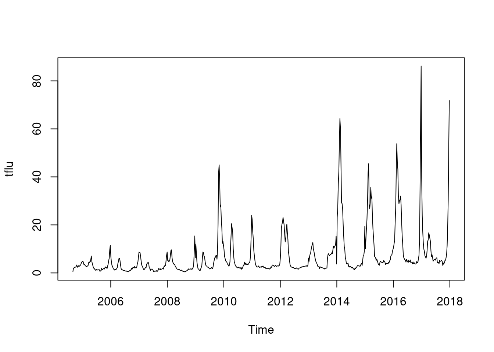 이것을 decomposition 하면
d.tflu <-decompose(tflu)
plot(d.tflu) ####### find seasonal and trend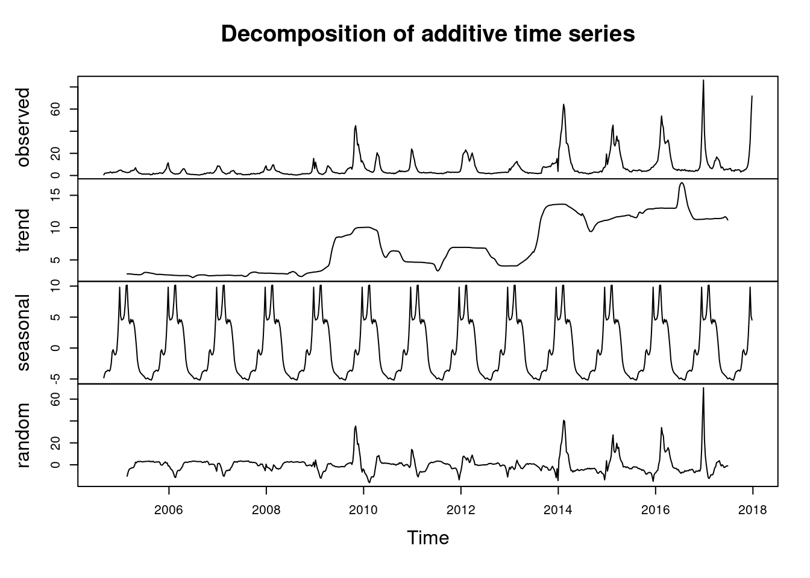
r.tflu <-d.tflu$random # residuals
s.tflu <-d.tflu$seasonal # seasonal
tr.tflu <-d.tflu$trend # long term trend3.5 analysis and forecasting, regression
Time series analysis is analyzing the data to find patterns, forecasting is extrapolating the patterns into the future, regression with time series pattern (time series regression) is regression method using time series analysis.
3.6 ARIMA
ARIMA (autoregressive intergrated moving average) 는 문자 그대로 자기상관관계와 이동평균을 이용합니다. univariate time series로 보시면 됩니다. ARIMA 모델에서 여러 파라메터를 자동으로 또는 수동으로 설정하여 구성해 가게 됩니다.
ARIMA(p, d, q)를 이해하면서 가 봅겠습니다.
| parameter | content | abbr |
|---|---|---|
| AR | Autoregressive part | p |
| I | Integrateion, degree of differencing | d |
| MA | Moving average part | q |
위 에서 p, d, q를 찾아 가는 방법을 ARIMA 모델이라고 부를 수 있습니다.
lags 과 forecasting errors로 구분할 수 있습니다.
- 과거의 변수가 현재를 예측, autoregressive part
- AR(1) or ARIMA(1,0,0): first order (lag) of AR
- AR(2) or ARIMA(2,0,0): second order (lag) of AR
- 과거의 error 가 현재를 예측 (forecasting error) = moving average part
- MA(1) or ARIMA(0,0,1): first order of MA
- MA(2) or ARIMA(0,0,2): second order of MA
자기상관관계 부분
\[ Y_{t} = c + \Phi_1 Y_{t-1} + \varepsilon_{t} \]
- \(t\) 시간에 관찰되는 변수 (\(Y_{t}\))는
- 상수 (c) 더하기
- 바로 1단위 전 변수 (\(Y_{t-1}\)) 에 계수(coefficient) (\(\Phi\)) 글 곱한 값을 더하고
- 현재의 에러를 \(t (e_{t})\)) 더한다
이동평균 부분
\[ Y_{t} = c + \Theta_1 \varepsilon_{t-1} + \varepsilon_t \]
- \(t\) 시간에 관찰되는 변수 (\(Y_{t}\))는
- 상수 (c) 더하기
- 바로 1단위 전 변수 (\(\varepsilon_{t-1}\)) 에 계수(coefficient) (\(\Phi\)) 글 곱한 값을 더하고
- 현재의 에러를 \(t (e_{t})\)) 더한다
결국 자기 상과관계와 이동평균을 한꺼번에 사용하면 아래와 같습니다.
\[\begin{align*} y_t &= \phi_1y_{t-1} + \varepsilon_t\\ &= \phi_1(\phi_1y_{t-2} + \varepsilon_{t-1}) + \varepsilon_t\\ &= \phi_1^2y_{t-2} + \phi_1 \varepsilon_{t-1} + \varepsilon_t\\ &= \phi_1^3y_{t-3} + \phi_1^2 \varepsilon_{t-2} + \phi_1 \varepsilon_{t-1} + \varepsilon_t\\ \end{align*}\]
d 는 시계열그림에서 ACF, PACF의 형태를 보고 차분의 필요여부 및 차수를 d를 결정하고 AR차수와 MA차수를 결정
어떻게 p, d, q 를 구할수 있을 까요?, 다음 장을 보겠습니다. ** 다음에 기회가 있을 때 하겠습니다.**
3.6.1 arima 감기 자살 , AIC
아래 ARIMA 모델을 보면 AIC 가 6583정도 나온 것을 알 수 있습니다. 우리는 이것을 통해 AIC가 6583 이하 정도 나오는 gam 모델을 사용하겠다 정도의 개념을 얻었습니다.
par(mfrow=c(1,1))
auto.arima(myd$wsui)## Series: myd$wsui
## ARIMA(0,1,2)
##
## Coefficients:
## ma1 ma2
## -0.3227 -0.0993
## s.e. 0.0379 0.0376
##
## sigma^2 estimated as 756.3: log likelihood=-3288.64
## AIC=6583.28 AICc=6583.31 BIC=6596.91myd <-myd %>% mutate(ma4 =ma(wsui, order=4), ymd2=as.Date(ymd2) ) ### 4weeks moving average
myd <-myd %>% mutate(ts.wsui =tsui, ts.ma4=ts(ma4, frequency =365.25/7 ))
m1<-arima(myd$wsui, order=c(1,1,1), fixed=c(NA, NA)) ## NA means include, 0 means exclude
m1##
## Call:
## arima(x = myd$wsui, order = c(1, 1, 1), fixed = c(NA, NA))
##
## Coefficients:
## ar1 ma1
## 0.2294 -0.5589
## s.e. 0.0941 0.0797
##
## sigma^2 estimated as 755.2: log likelihood = -3289.13, aic = 6584.26tsdiag(m1)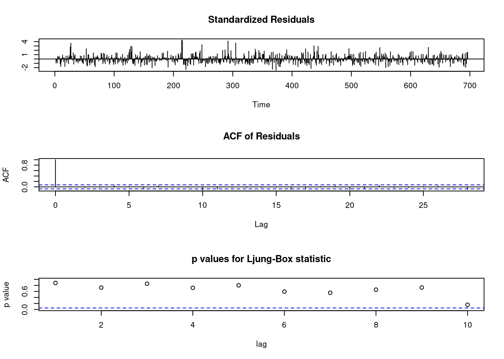
3.7 AIC BIC in generalize additive model
gg <-function(x) {
model <-glm(data=myd, wsui ~ ns(ymd2, x))
aic <-AIC(model)
return(aic)
}
gg2 <-function(x) {
model <-glm(data=myd, wsui ~ ns(ymd2, x))
bic <-BIC(model)
return(bic)
}
test <-mapply(x=c(50:100), gg);test2<-mapply(x=c(50:100), gg2)
par(mfrow=c(1,2))
plot(c(50:100), test);plot(c(50:100), test2)
abline(v=64)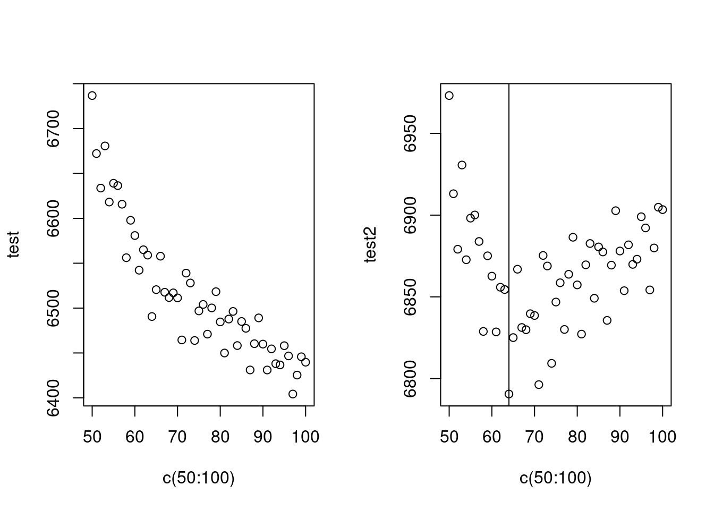
AIC는 수렴하지 않아 어렵고, BIC는 64에서 최소 값을 보이네요. 64를 자유도로 선정하고 수행하겠습니다.
mod1<-glm (wsui ~ ns(ymd2, 64), data=myd)
BIC(mod1)## [1] 6790.573long term trend (월)과 단기 trend 를 나누어 만들어 보면 어떨까요? 위에 64로 한번에 해결하는 게 더 좋은 모형 같습니다.
mod1<-glm( wsui ~ ns(ordweek, 12)+ns(nwd, 5), data=myd)
BIC(mod1)## [1] 6907.866기존의 sin cosin 방법으로 시계열 분석을 해보는 것은 어떨까요?
par(mfrow=c(1,1))
ssp<-spectrum(myd$wsui)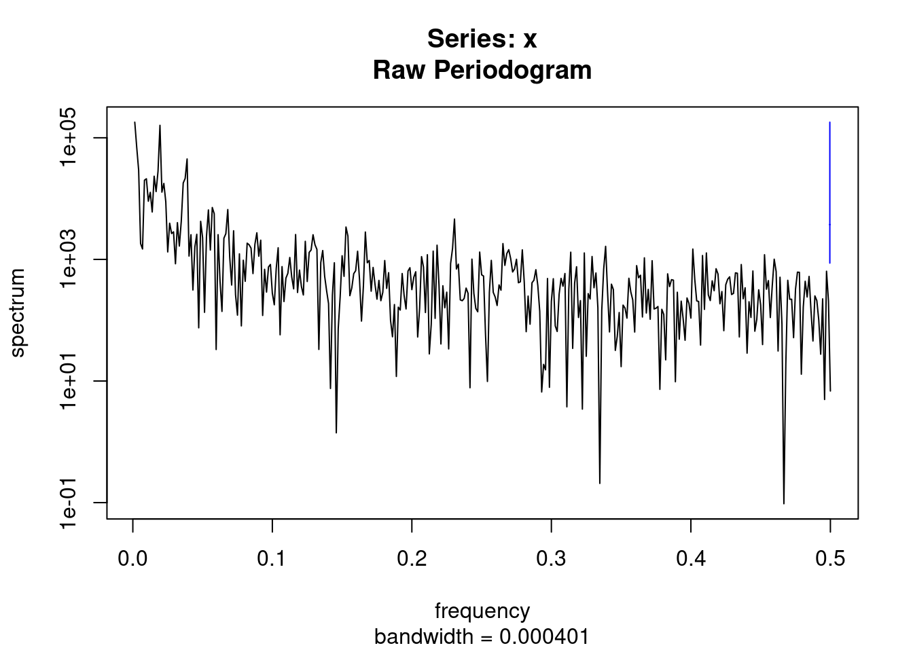
per<-1/ssp$freq[ssp$spec==max(ssp$spec)]
sin.x<-sin(2*pi*myd$ordweek/(365.25/7))
cos.x<-cos(2*pi*myd$ordweek/(365.25/7))
modsean <-glm(wsui ~ ns(sin.x, 2)+ns(cos.x, 2), data=myd)
modlgam<-glm(wsui ~ ns(ordweek, 4), data=myd)
plot(myd$ymd2, myd$wsui, ylim=c(-10, 450), col='grey')
points(myd$ymd2, modlgam$fitted.values, type='l', col='blue')
points(myd$ymd2, modsean$fitted.values, type='l', col='blue')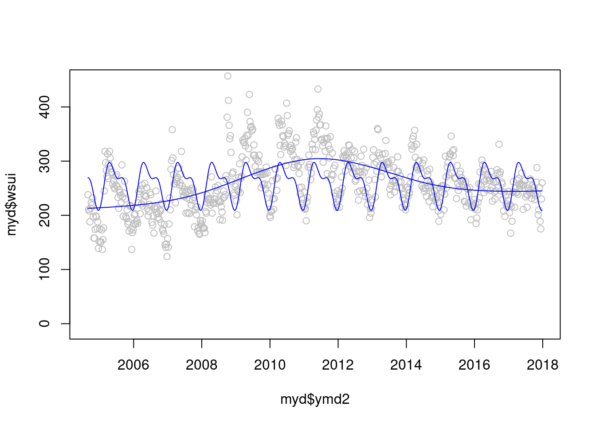
자 이제 2 모델을 검토해 보겠습니다. gam 과 sin cosin 모델 어떤게 더 좋아 보이시나요? 정해진 규칙은 겂습니다.
plot(myd$ymd2, myd$wsui, ylim=c(-10, 450), col='grey')
points(myd$ymd2, modlgam$fitted.values, type='l', col='blue')
points(myd$ymd2, modsean$fitted.values, type='l', col='blue')
mod1 <-glm(wsui ~ flu+ns(ordweek, 51)+ns(sin.x, 2)+ns(cos.x, 2) , data=myd)
points(myd$ymd2, mod1$fitted.values, type='l', col='red')
modgam<-glm (wsui ~ ns(ymd2, 64), data=myd)
points(myd$ymd2, modgam$fitted.values, type='l', col='black')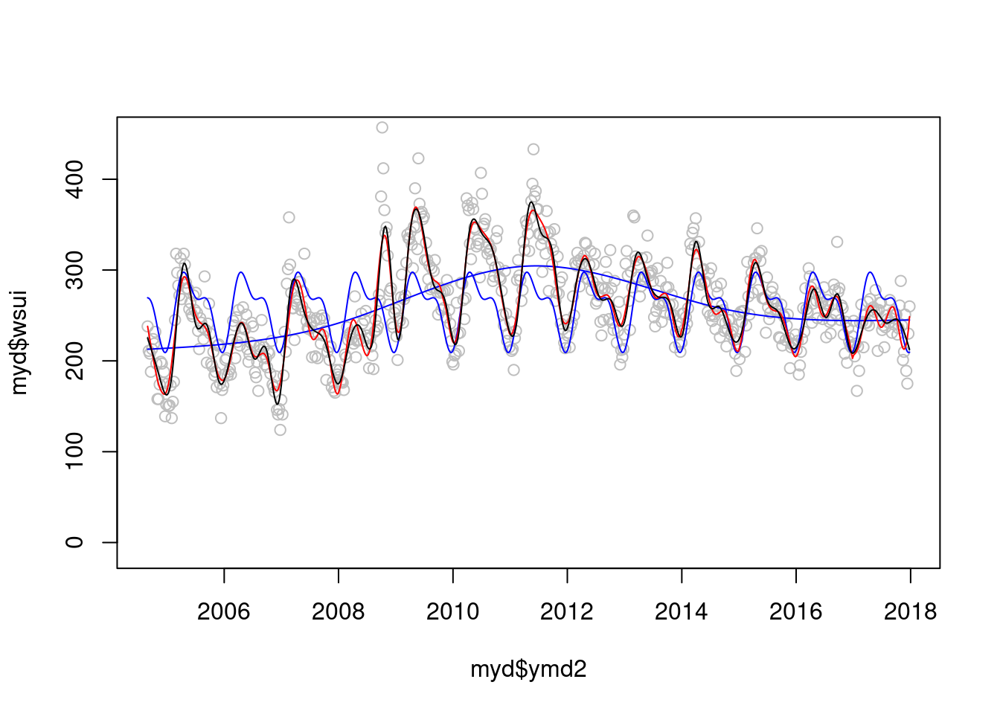 정해진 규칙은 없지만 AIC와 BIC로 비교해 볼수 있을 것 같습니다.
AIC(mod1);AIC(modgam)## [1] 6522.669## [1] 6490.58BIC(mod1);BIC(modgam)## [1] 6786.299## [1] 6790.573이제 sin과 cos 에 어떠한 df를 주는 것이 좋을 까요?
myd$econo <- ifelse(myd$YR %in% c(2009), 1, 0)
gg <-function(x) {
model <-glm(data=myd, wsui ~ Lag(flu, 1)+ns(ordweek, 4)+ns(sin.x, x)+ns(cos.x, x))
aic <-AIC(model)
return(aic)
}
gg <-function(x) {
model <-glm(data=myd, wsui ~ Lag(flu, 1)+ns(ordweek, 4)+ns(sin.x, x)+ns(cos.x, x))
bic <-BIC(model)
return(bic)
}
p<-c(1:10)
test <-mapply(x=p, gg);test2<-mapply(x=p, gg2)
plot(p, test)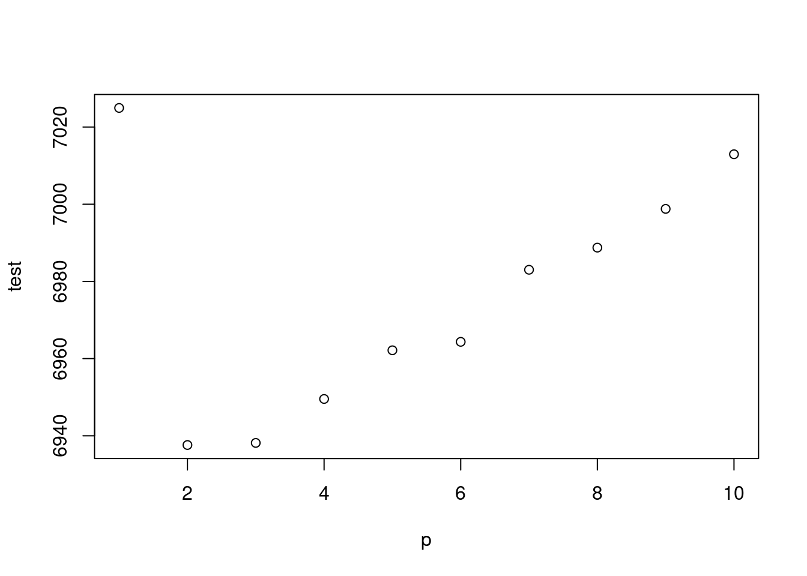
plot(p, test2)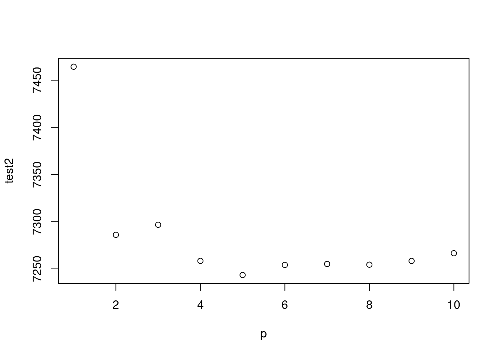
주중 효과 까지 한번 보겠습니다.
gg <-function(x) {
model <-glm(data=myd, wsui ~ Lag(flu, 1)+ ns(ordweek, x)+ns(sin.x, 2)+ns(cos.x, 2))
aic <-AIC(model)
return(aic)
}
gg2 <-function(x) {
model <-glm(data=myd, wsui ~ Lag(flu, 1)+ns(ordweek, x)+ns(sin.x, 2)+ns(cos.x, 2))
bic <-BIC(model)
return(bic)
}
gg(10)## [1] 6855.118test## [1] 7024.946 6937.616 6938.160 6949.544 6962.157 6964.344 6983.018 6988.755
## [9] 6998.796 7012.950p<-c(10:100)
test <-mapply(x=p, gg);test2<-mapply(x=p, gg2)
par(mfrow=c(1,2))
plot(p, test)
abline(v=39)
plot(p, test2)
abline(v=39)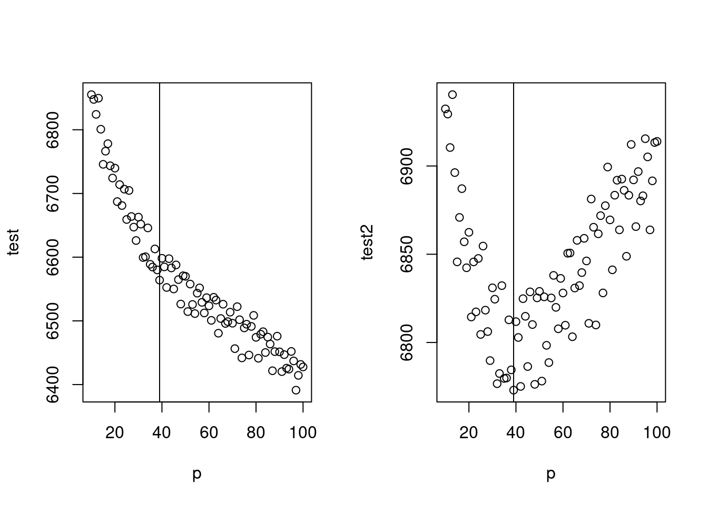
최종 모델은 아래와 같습니다.
mod2 <-glm(data=myd, wsui ~ flu+ ns(ordweek, 39)+ns(sin.x, 2)+ns(cos.x, 2))
par(mfrow=c(1,1))
plot(myd$ymd2, myd$wsui, cex=0.5, col='grey', ylim=c(-50, 450))
points(myd$ymd2, mod2$fitted.values, type='l', col='red')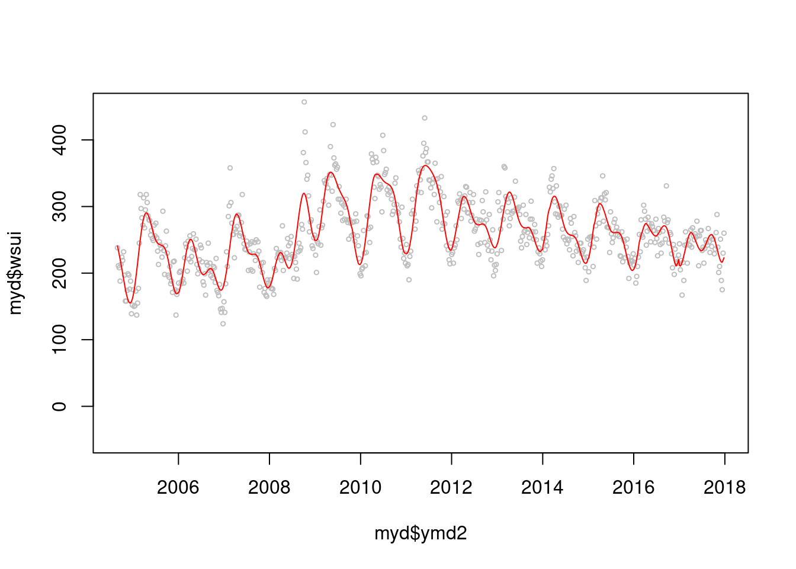
BIC(mod2)## [1] 6785.09AIC(mod2)## [1] 6576.004그럼 이제 lag time 을 non-linear 로 할때 몇차 방정식이 좋을까요? 둘다 2차 방정식이 좋네요
gg3<-function(pp){
cb<- crossbasis(myd$flu/10, lag=24, argvar=list("lin"), arglag = list(fun="poly", degree=pp))
model<-glm(data=myd, wsui ~ cb + ns(ordweek, 39)+ns(sin.x, 2)+ns(cos.x, 2))
aic<-AIC(model)
return(aic)
}
gg4<-function(pp){
cb1<- crossbasis(myd$flu/10, lag=24, argvar=list("lin"), arglag = list(fun="poly", degree=pp))
model1<-glm(data=myd, wsui ~ cb1 + ns(ordweek, 39)+ns(sin.x, 2)+ns(cos.x, 2))
bic<-BIC(model1)
return(bic)
}
p<-c(2:10)
test3 <-mapply(pp=p, gg3);test4 <-mapply(pp=p, gg4)
par(mfrow=c(1,2))
plot(p, test3)
plot(p, test4)
종합해서 나타내 보겠습니다. 이것이 첫번째 종착지 입니다.
par(mfrow=c(1,1))
cb1<- crossbasis(myd$flu/10, lag=24, argvar=list("lin"), arglag = list(fun="poly", degree=2))
model1<-glm(data=myd, wsui ~ cb1 + ns(ordweek, 39)+ns(sin.x, 2)+ns(cos.x, 2), family=quasipoisson())
pred1.cb1 <-crosspred(cb1, model1, at=1:100, bylag=0.1, cumul=TRUE)
plot(pred1.cb1, "slices", var=1, col=3, ylab="Relative risk of suicide", #ci.arg=list(density=50, lwd=1),#
main="Temporal effect by influenza",
xlab="Lag (weeks)", family="A",#ylim=c(0.980, 1.02),
col='black') ;grid()
title(main="% increment of influenza like illness",
family="A",
adj=1, line=0, font.main=3, cex=0.5 )
lin <-c(5:10)
abline(v=lin, lty=3, col='lightgray')
axis(side=1, at=c(6, 7, 8, 9)) 2009년 이전과 이후를 그려보겠습니다.
2009년 이전과 이후를 그려보겠습니다.
myd2<-myd %>% mutate(sinx=sin.x, cosx=cos.x) %>% mutate(flu210=flu/10)
mf1d <-myd2 %>% filter(YR <=2008)
mf2d <-myd2 %>% filter (YR>=2009)
mf1 <-glm(data=mf1d, wsui ~ flu + ns(ordweek, 25)+ns(sinx, 2)+ns(cosx, 2), family=quasipoisson())
mf1s<-glm(data=mf1d , flu210 ~ ns(ordweek, 25)+ns(sinx, 2)+ns(cosx,2), family=quasipoisson())
b2008<-summary(mf1)$coefficient[2,]
mf2 <-glm(data=mf2d, wsui ~ flu + ns(ordweek, 22)+ns(sinx, 2)+ns(cosx, 2), family=quasipoisson())
mf2s <-glm(data=mf2d, flu210 ~ns(ordweek, 25)+ns(sinx, 2)+ns(cosx,2), family=quasipoisson())
f2008<-summary(mf2)$coefficient[2,]
mfresid<-c(mf1$residuals, mf2$residuals)
Ch <-c(myd2$Change_2008)## Warning: Unknown or uninitialised column: `Change_2008`.#exp(cbind("Relative Risk"=coef(mf2), confint.default(mf2, level = 0.95)))
#exp(cbind("Relative Risk"=coef(mf1), confint.default(mf1, level = 0.95)))
# E(Y) = intercept + B1X1 +gam(others)
# E(Y)- intercept - B1X1 = gam(otehrs)
gamothers1 <- mf1$fitted.values - 0.943684 -(-0.013931) *mf1d$flu210
gamothers2 <- mf2$fitted.values - 0.8892468 -(0.0023323696) *mf2d$flu210
# E(Y)- intercept - gam(others)= B1X1
# Hence Y axis = E(Y)- intercept - gam(others)
Yaxis.mf1d <- mf1$fitted.values -(0.943684) - gamothers1
Yaxis.mf2d <- mf2$fitted.values -(0.8892468) - gamothers2
mf1d$Yaxis.mf <-Yaxis.mf1d
mf2d$Yaxis.mf <-Yaxis.mf2d
plot(mf1d$flu210, Yaxis.mf1d)
plot(mf2d$flu210, Yaxis.mf2d)
plot(myd2$flu210*10, myd2$wsui)
#summary(glm(Yaxis.mf1d ~ mf1d$flu210))
#summary(glm(Yaxis.mf2d ~ mf2d$flu210))
tt <-c(mf1d$Yaxis.mf, mf2d$Yaxis.mf)
tt2<-c(mf1$fitted.values, mf2$fitted.values)
myd2 <-myd2 %>% mutate(Yaxis.mf =tt, mfresid =mfresid, mf.fit=tt2)2009년 이후로 좀더 사망하게 되네요.
f3<-ggplot(data=myd2, aes(flu210, Yaxis.mf, col=Change))+geom_line(size=1)+
geom_point(data=myd2, aes(flu210, Yaxis.mf, shape=Change), size=0.0)+
theme_bw(base_size=14,base_family='Times New Roman')+
theme(panel.border = element_blank(), axis.line = element_line(colour = "black"),
axis.text.x=element_text(size=12),
axis.text.y=element_text(size=12))+
xlab("Influenza") +ylab("Increment of Suicide")
fig3 <-f3 + geom_point(aes(flu210, mfresid, shape=Change), size=3 ) +
scale_shape_manual(values=c(1, 20))+ scale_colour_manual(values=c('red', 'grey45'))+
theme(legend.position="right") +
labs(title="Linear relationship between Influenza and Suicide",
subtitle="Beta = -0.066, p = 0.214 before 2009\n *RR = 0.013, p = 0.018 from 2009") +
theme(plot.subtitle=element_text(size=12, hjust=1, face="italic", color="black")) +
scale_x_continuous(trans = 'log')
fig3
지금까지의 내용을 정리해 보겠습니다.
mf11 <-glm(data=mf1d , wsui ~ ns(ordweek, 25)+ns(sinx, 2)+ns(cosx,2))
mf12 <-glm(data=mf2d, wsui ~ ns(ordweek, 22)+ns(sinx, 2)+ns(cosx, 2))
tt3<-c(mf11$residuals, mf12$residuals)
myd2<-myd2 %>% mutate(f3resid=tt3) %>% mutate(Period=Change)
f1<-ggplot(data=myd2, aes(ymd2, wsui, shape=Change), size=0.3)+ scale_shape_manual(values=c(1, 19), name="")+
geom_point(data=myd2, aes(ymd2, wsui, shape=Change))+
#geom_point(aes(x=ymd2, y=f3resid, col=Change)) +
geom_line(data=myd2, aes(ymd2, mod2$fitted.values, linetype="A", color='A'))+
geom_line(data=myd2, aes(ymd2,flu210*20, linetype="B", color='B'))+
geom_line(data=myd2, aes(ymd2, f3resid, linetype="C", color='C'))+
scale_linetype_manual(values=c(A="dotted", B="solid", C="dashed"),
labels=c("Suicide (Crude)", "Influenza like illness", "Suicide \n(Time series adjusted)"),
name="Suicide and Influenza")+
scale_color_manual(values=c(A="black", B="blue", C="red"),
labels=c("Suicide (Crude)", "Influenza like illness", "Suicide \n(Time series adjusted)"),
name="Suicide and Influenza")+
theme(panel.border = element_blank(), axis.line = element_line(colour = "black"),
axis.text.x=element_text(size=12),
axis.text.y=element_text(size=12)) +
xlab("Years (unit=weeks)") +ylab("Number of weekly suicide")
figure1 <- f1 +
geom_smooth(aes(ymd2, f3resid), method='gam', formula=y ~ns(x, 60),
se=TRUE, col='red', linetype="solid", size=0.3, fill = 'red')+
theme( legend.position = "right") +
labs(caption ="*Beta = weekly suicide number change by % increment of influenza like illness",
title=""#, subtitle="Beta = -0.014, p = 0.158 before 2009\n Beta = 0.002, p = 0.011 from 2009"
) + theme(plot.title=element_text(size=16, hjust=0.5)) + #face="italic", color="black"))+
theme(legend.text=element_text(size=12)) +
scale_y_continuous(sec.axis = sec_axis((~./20), name="Influenza like illness ( per 100 outpatient )")) +
annotate("text", x = as.Date('2008-09-01'), y = 450, label = 'bold("Before 2009 ( )")', parse=TRUE, family='A', hjust = 1) +
annotate("text", x = as.Date('2008-09-01'), y = 430, label = 'italic("*Beta = -0.066")', parse=TRUE, family='A', hjust = 1) +
annotate("text", x = as.Date('2008-09-01'), y = 410, label = 'italic(" p = 0.214")', parse=TRUE, family='A', hjust = 1) +
guides(shape=FALSE)+
annotate("text", x = as.Date('2012-01-01'), y = 450, label = 'bold("From 2009 ( )")', parse=TRUE, family='A', hjust = 0) +
annotate("text", x = as.Date('2012-01-01'), y = 430, label = 'italic("*Beta = 0.013")', parse=TRUE, family='A', hjust = 0) +
annotate("text", x = as.Date('2012-01-01'), y = 410, label = 'italic(" p = 0.019")', parse=TRUE, family='A', hjust = 0) +
geom_point(x=as.Date('2008-06-25'), y=449, size=3, shape=1) +
geom_point(x=as.Date('2013-11-01'), y=449, size=3, shape=19) +
geom_vline(xintercept = as.Date('2009-01-01'), linetype="dotted",
color = "grey50") #+## Warning: `guides(<scale> = FALSE)` is deprecated. Please use `guides(<scale> =
## "none")` instead. #annotate("rect", xmin = as.Date('2004-06-01'), xmax = as.Date('2009-01-01'), ymin = -50, ymax = 470,
# alpha = .1)
figure1 
여기 까지 실습하시느라 수고하셨습니다. 상기 분석 방법으로 아래 논문을 출판하였습니다. 참고해서 보시면 좋겠습니다. https://journals.plos.org/plosone/article/comments?id=10.1371/journal.pone.0244596